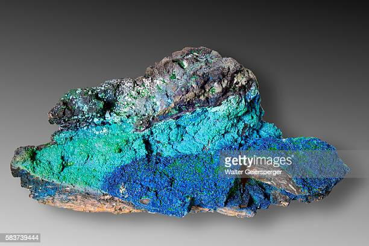
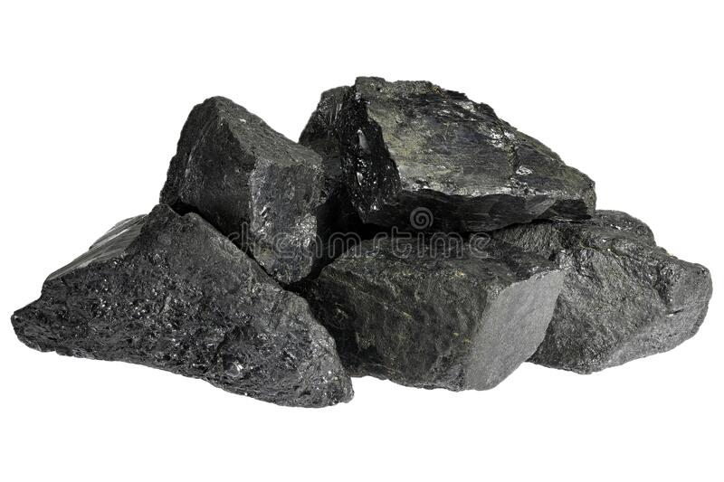
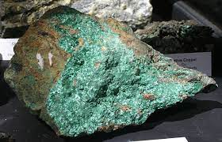
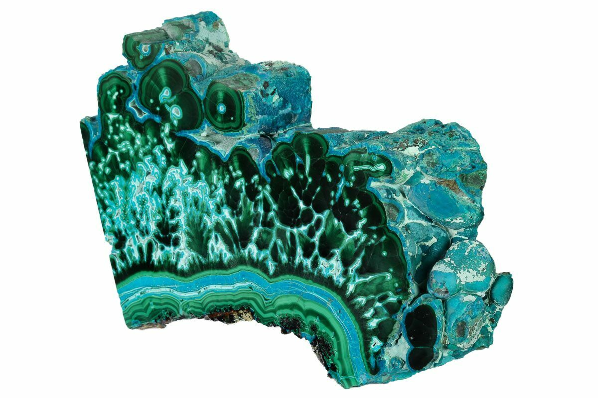
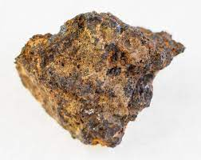
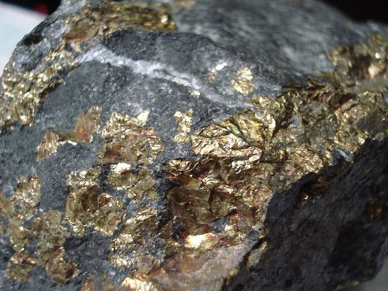

Our Vision and Values / Mineral - Cobalt
Migra’s mission is to mine to create wealth for our people, host communities and stakeholders. This is underpinned by our vision, values, governance structure and Code of Conduct.

Human Rights / Mineral - Coltan
Migra is committed to respecting the human rights of all our stakeholders and the communities in which we live and operate, and to providing access to effective remedies where we make an impact.

Safaty / Mineral - Copper
At Migra, the health and safety of our people is our first value. We work hard to embed a company-wide safety mindset reinforced by our leaders, behaviours and culture across all our sites and offices.

Environment Management / Mineral - Malachite
At Migra we are committed to minimising our environmental footprint through the efficient use of natural resources, management of waste by products and effective life-cycle management.

Social Performance / Mineral - Iron
Our approach to community engagement is to consult with, listen and respond openly to our stakeholders.

Supply Chain / Mineral - Gold
Migra sources goods and services through a global supply chain to satisfy the requirements of our operating sites and functions.